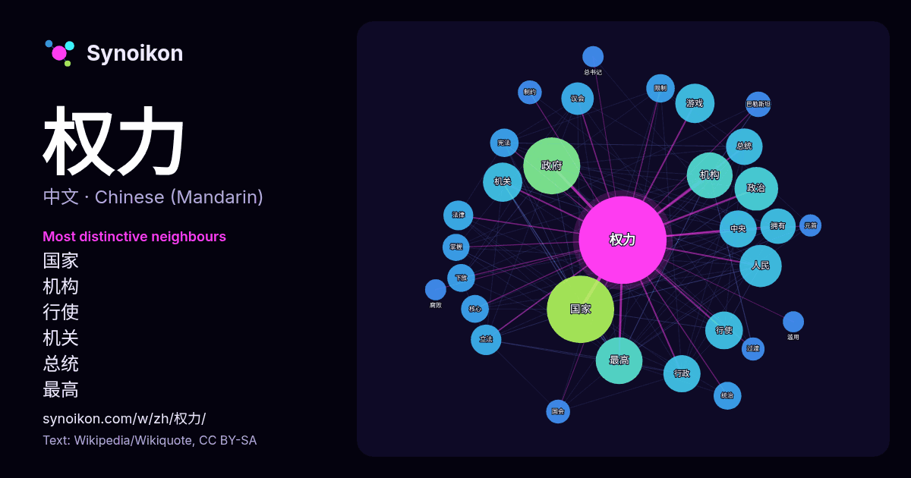

中文 · 热门词
权力
“power” · 来自维基百科, Wikiquote 951 次出现中其周围的词。

最具特色的邻近词
- 国家 37×
- 机构 32×
- 行使 32×
- 机关 30×
- 总统 24×
- 最高 24×
- 议会 21×
- 拥有 19×
- 下放 19×
- 游戏 18×
- 行政 18×
- 宪法 17×
- 政治 17×
- 立法 17×
- 政府 16×
- 人民 16×
- 掌握 16×
- 巴勒斯坦 16×
- 统治 15×
- 制约 15×
× = 比维基百科普通文本中多出的倍数。
最常见的邻近词
- 国家 112
- 政府 80
- 最高 54
- 机构 52
- 政治 47
- 人民 44
- 机关 38
- 游戏 38
- 行使 35
- 中央 34
- 行政 34
- 总统 33
- 拥有 31
- 议会 26
- 立法 23
- 法律 22
- 宪法 20
- 没有 20
- 限制 20
- 下放 19
上下文
- 权力关系，例如组织中的上下级关系，家庭中的家长权力 文化权力：在文化共同体中，对文化象征物和文化解释权拥有垄断地位的人所天然拥有的权力 加尔布雷斯根据权力属性不同，分为： 应得权力：强制或选择个人和团体爱好的能力来使他人服从的权力 报偿权力：给予个体某种利益使之服从 制约权力：通过改变信仰实施权力，服从者并没有感觉到服 … Wikipedia snippets · 權力
- 《权力的游戏》（英語：Game of Thrones，香港译《权力游戏》，马来西亚、新加坡、台湾译《冰与火之歌：权力游戏》）是一部美國中世紀奇幻史詩劇情類型的電視連續劇。該系列連續劇由大衛·貝尼奧夫和D·B·魏斯替HBO創作。劇情改編自喬治·R·R·馬丁的奇幻小說系列《冰與火之歌》。該劇集於貝爾法 Wikipedia snippets · 权力的游戏 (电视剧)
- Congress），通稱為美國國會，是美国最高立法机关，由參議院與眾議院構成，位於華盛頓特區的國會大廈。根据《美国宪法》，美国是三权分立的国家，其中立法权力歸於国会、行政权力歸於总统、司法权力歸於最高法院及国会依法设立的下级联邦法院。国会由經直接选举產生參議院議員與眾議院議員组成的兩院制度，每个议员代表其选区或州内的选民 Wikipedia snippets · 美国国会
- 权力的运动，以及18世纪末北美殖民地摆脱英帝国统治、建立民主制度的斗争。美国的《独立宣言》和法国的《人权宣言》及两国的宪法均体现了《社会契约论》的民主思想。 卢梭相信，一个理想的社会建立于人与人之间而非人与政府之间的契约关系。与约翰·洛克一样，卢梭认为政府的权力 Wikipedia snippets · 社会契约论
- 《利维坦》（英語：Leviathan），又譯為《巨靈論》，全名为《利维坦，或教会国家和市民国家的实质、形式、权力》（英語：Leviathan or The Matter, Forme and Power of a Common Wealth Ecclesiastical and Wikipedia snippets · 利维坦 (霍布斯)
- 政府也是一种组织，区别于一般的社会组织，政府权力的取得必须具有合法性，同时具有强制性和权威性。权力只为权力来源负责，政府也不例外。如果政府的权力来源恰好是国民或公民，政府就对国民公民负责，为公共利益服务。 政府應依法行政。如果政府行使職權時超出法律限制的范围，就是“濫權”；若政府並未完全行使法律所賦予的公權力，就是“不作为”或“失職”。两者都是政府施政的疏失。 Wikipedia snippets · 政府
- 职权实现了三次转移，因前三者均无常设机构履行其职能。 中国共产党中央政治局常务委员会委员（简称“中共中央政治局常委”）拥有党和国家的最高领导、决策等权力，属于正国级党和国家领导人。中共中央总书记作为常委会的首要成员，领导、协调其日常运转，召集并主持会议。通常，中央委员会全体会议选举产生中央政治局委员 Wikipedia snippets · 中國共產黨中央委員會政治局常務委員會
- 540万，为欧洲最大。现任英国君主为國王查爾斯三世，於2022年9月8日即位。英国由四个构成国组成，分别为英格兰、苏格兰、威尔士和北爱尔兰，其中后三者在权力下放体系之下，各自拥有一定的权力。三地首府分别为爱丁堡、卡迪夫和贝尔法斯特。14块海外领地和附近的王室屬地（马恩岛、根西及泽西）并非联合王国的一部分，英国政府负责其国防及外交事务。 Wikipedia snippets · 英国
更多词
于 2026-10-09 以默认设置预先计算（±5 个词，中等语料）。交互式图可用实时数据刷新。
界面为机器翻译，欢迎指正。